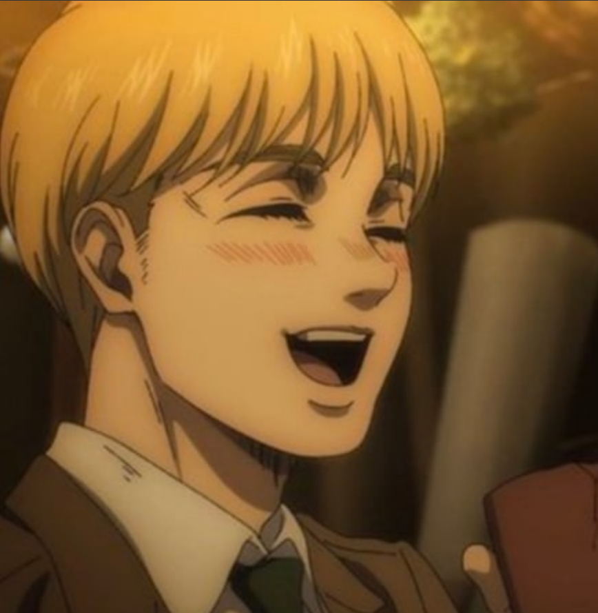

Armin Arlert
Armin's appearance
 Human form Armin has a boyish face, with large hazel eyes and a small pointed nose which is always distinctly a bit red. His blond hair is styled in a long undercut with bangs over his entire forehead. Armin has noticeable defined eyebrows and sideburns, indicating his age. His frame is, as it has always been, relatively small and lacking in muscle but not the definition. During the attack on Liberio, Armin is seen wearing a standard cloak for hiding purposes before he transformed. He is noticeably a bit taller and has his hair cut shorter. As a soldier in the Survey Corps, Armin is seen wearing their revamped black uniform for the night raid on Marley. As a teen, Armin was rather short for his age, though he had a somewhat defined build. He had a round face with blond hair that is cut in the style of a bob and large expressive eyes with brown eyebrows. In his childhood, Armin wore a long-sleeved single-buttoned jacket with a collared shirt, long dress-pants, and dress shoes. As a member of the 104th Training Corps, Armin wore the standard 104th Training Corps uniform with a white button up underneath. Before the redesign of their uniform, Armin wore the standard Survey Corps soldier outfit. Underneath his short brown jacket, he had a white collared button-up shirt, similar to the one he wore as an adolescent. Like his comrades, Armin has supplemented his attire with a large green cape when participating in the expeditions outside the Walls and missions. He also wore long brown boots that reach up almost to his knees, as the other soldiers did.
Human form Armin has a boyish face, with large hazel eyes and a small pointed nose which is always distinctly a bit red. His blond hair is styled in a long undercut with bangs over his entire forehead. Armin has noticeable defined eyebrows and sideburns, indicating his age. His frame is, as it has always been, relatively small and lacking in muscle but not the definition. During the attack on Liberio, Armin is seen wearing a standard cloak for hiding purposes before he transformed. He is noticeably a bit taller and has his hair cut shorter. As a soldier in the Survey Corps, Armin is seen wearing their revamped black uniform for the night raid on Marley. As a teen, Armin was rather short for his age, though he had a somewhat defined build. He had a round face with blond hair that is cut in the style of a bob and large expressive eyes with brown eyebrows. In his childhood, Armin wore a long-sleeved single-buttoned jacket with a collared shirt, long dress-pants, and dress shoes. As a member of the 104th Training Corps, Armin wore the standard 104th Training Corps uniform with a white button up underneath. Before the redesign of their uniform, Armin wore the standard Survey Corps soldier outfit. Underneath his short brown jacket, he had a white collared button-up shirt, similar to the one he wore as an adolescent. Like his comrades, Armin has supplemented his attire with a large green cape when participating in the expeditions outside the Walls and missions. He also wore long brown boots that reach up almost to his knees, as the other soldiers did.
Colossus Titan form In his Colossus Titan form, Armin is entirely skinless and is extremely tall, similar to Bertolt's Titan. His Titan has elongated, skinny arms reaching past its knees and very muscular legs with short thick feet. His Titan's feet are shaped so that it can stand without falling over due to its proportions and height. Armin's Titan's upper body is also fairly skinny, with an exposed rib cage on the front and sides. Its face is missing a nose and almost all of its skin, which is replaced by bare bone. The eyes of Armin's Titan form are sunken in and somber, with muscle surrounding them. Armin's teeth are shown due to the lack of skin on his cheeks. However, unlike the previous Colossus Titan, Armin's Titan has lips which are surrounded by some muscle. What makes Armin's Titan particularly unique is the exposed windpipe that can be seen at its neck, with only two tendons in front of it. It also lacks visible outer ears. Pure Titan form Before inheriting the power of the Colossus Titan from Bertolt Hoover, Armin's Pure Titan form shared a number of traits with his human form. It had blond shoulder-length hair, a relatively small body with a mouth that has no lips and black eyes as well as a skeletal nose. In addition, the ribs of the Titan were visible through the skin and its arms were also very skinny. While its exact height was unknown, it was shown to be big enough to peer over a three-story house rooftop.
Armin's personality
Even when he was young, the naturally curious Armin had a deep fascination with the world beyond the Walls. As a child, he found and studied an illegal book about the outside world that was owned by his grandfather. He told Eren Yeager, his best friend, about the book and the information that was contained in it. Armin was branded a heretic by other children for his unusual interest in the outside world, and was thus frequently picked on. Too timid to defend himself, Armin would often rely on his friends Eren and Mikasa Ackerman to protect him from local bullies. This, coupled with his frail physique, was a source of much shame for Armin, leading him to have poor self-esteem and to believe that he was a burden to others. Because of this, Armin has always been very eager to prove his worth. As a child, he hoped that one day he would be able to consider himself a true equal to his friends.
When Armin got older he enrolled in military training and after graduating he joined the Survey Corps with Eren and Mikasa. He wanted, first, to try to make a good and meaningful impact on the world, and second, to fulfill his dream to see the outside world. His curiosity has remained a strong personality trait from when he was young, driving him to do whatever it takes to ensure humanity triumphs over the Titans. Armin continued to have low self-esteem during his training years and for a short while after graduation. During this time, Armin considered himself to be useless due to his lack of physical strength and skill. However, soon after graduation, he came to learn that his mind is an equally valuable asset to the military, and that he can use his brain to help people. Consequently, Armin gradually gains confidence in himself and his abilities. Nonetheless, he can still be hard on himself at times. The fact that he is so willing to sacrifice himself to achieve a goal shows that he still does not value his own life as much as he should. Armin is exceptionally loyal and selfless. He constantly worries for the safety of his friends. He is always prepared to throw himself into dangerous situations to save them, even offering to sacrifice himself for Mikasa. When he, Jean Kirstein, and Reiner Braun had to decide who would be left behind without a horse, Armin immediately offered himself without hesitation. When Jean was injured in battle, Armin rushed to his aid, placing himself in danger as well. Although he and Eren were determined to live their dream of seeing the outside world, Armin was content to give up his life in order to defeat the Colossus Titan and to have his dream fulfilled through Eren. Armin is also very level-headed, keeping Eren and Mikasa under control whenever their emotions get the better of them. He has talked down a fight Eren started with a soldier, and restrained Mikasa from acting rashly during Eren's military trial. Armin is a very analytical person. He likes to think deeply about situations and solve problems using his mind. These personality traits, in conjunction with his intelligence, good judgment, level headedness, ability to plan ahead, come up with creative ideas and to think outside the box, are what make him a great tactician. He is not an extrovert or loud person. When he was suddenly thrown into a leadership role that involved being in the spotlight, speaking in front of people and ordering people around constantly, he got quite anxious and momentarily froze up; while he has slowly become more adept at a leadership role, he has still shown some hesitation and anxiety when Hange promoting him as their successor and when Levi asked what they should do to stop the Rumbling. Armin has shown great investment in humanity's future, and is always striving for and thinking about how he can change things for the betterment of mankind. Armin is also good at thinking on the fly and improvising; when he noticed that the ultimate plan of both Zeke Yeager and Yelena seemed to go against how Eren viewed the world, he kept this to himself and quickly began to act in a manner that would make Yelena and the Yeagerists believe he also was driven by their cause. Armin's hard and cruel life has caused him to have certain beliefs about how the world works. Armin believes that in the cruel world, in which they live in order to surpass monsters, accomplish goals or make a difference, one must be willing to sacrifice anything, including their humanity. Armin admires strong leaders such as Erwin Smith, Darius Zackly, Ian Dietrich, and Dot Pixis for their ability to sacrifice themselves and their humanity in order to achieve their goals. He believes that tactical decisions should be based on logic rather than emotions, and becomes noticeably affected when others (primarily Eren) do the opposite.
Even though Armin makes calculated decisions, he is also a very emotionally sensitive and empathetic person. Due to Armin's kind heart, he faces conflict in his mind with his belief that he has to force himself to throw away his humanity. For example, Armin killed a person to save Jean as it was the logical thing to do; however, he became very emotionally upset afterward. This, in conjunction with the fact that he is hard on himself whenever he does something wrong, means that he has yet to completely throw away his humanity. Armin's most consistent traits remain his kind heart and keen intuition, making him often concerned with the group's morality. Even when killing multiple Marleyan soldiers and civilians, Armin emerges from his Titan in tears. Despite this, Armin strongly believes that morality is relative and that there are no universal laws of good and evil. Therefore, he has a distaste for the terms 'good person' and 'bad person', since no one could be either good or bad to everyone. This makes him willing to concoct underhanded, morally questionable plans that shock some of his comrades. Notably, both Mikasa and Eren, his best friends, show no hint of surprise at this ability of his, with the latter even commenting that he had always known Armin was capable of it.
Armin's history
Armin originally lived in the Shiganshina District of Wall Maria. After his parents were executed for attempting to escape the Walls, he was left to live with his grandfather. One day, after the latest in a series of beatings by bullies, Armin sat against a building, crying. Another boy, Eren Yeager, appeared around the corner with a shady look on his face. Eren asked Armin why he never fought back, and claimed that that was why they treated him like that; he then asked him if he wanted to be on the losing side forever. Armin then claimed that he was not losing by not running away. Eren then asked for his name, and the two began a friendship. Both Armin and Eren were united together as outcasts from the other children in town. One day, Armin discovered a book belonging to his grandfather, describing the outside world. Inspired by what he read, he showed the book to Eren, who was subsequently inspired by Armin's excitement to leave the Walls one day. Armin would often spend his time enthusing Eren about the outside world, for which he held a passionate curiosity. Reading from his grandfather's book about salty oceans, deserts and other surreal or unheard of places, Armin expressed a desire to one day venture out and see these magnificent sights for himself. However, his interest in the outside world was met with frequent harassment by local bullies, who regarded him as a heretic.
MEMES
|
|
|
|
|
|
|
|